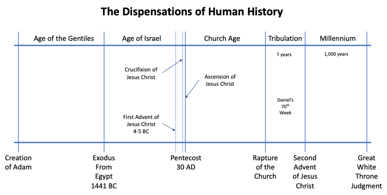
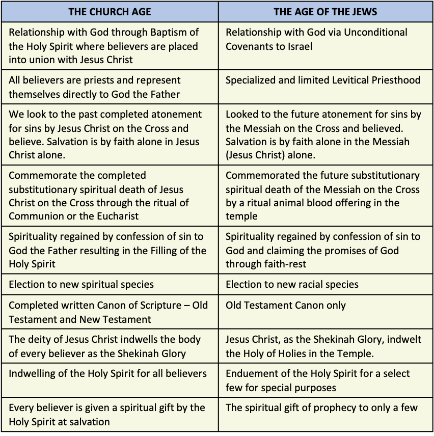

Austin Bible Church
Dispensations are periods of human history expressed in terms of divine revelation or divine viewpoint. God’s will and plan are not the same for every dispensation. Believers must orient to God's will and plan in each dispensation. God tests the believer’s orientation to His plan in each dispensation.
Although there are many interpretations of human history, the only accurate theological interpretation is dispensational. The word “dispensation” is now used as a technical theological term for an era of human history from the divine viewpoint.
The History of Civilizations
The divine interpretation of history is set forth in the Word of God. The Bible gives the mind of Christ with regard to the ups and downs of civilizations. According to the Bible, when there is a saturation of Bible doctrine in any one generation or period of history, there is prosperity and blessing from God. An example was the period from 516 BC to 400 BC and the period from 400 BC to 323 BC. Also, the time of the Antonine Caesars from 96 AD to 180 AD. Great Britain became great because of her adherence to Bible doctrine. When Bible doctrine was forsaken, down went the nation. The Unites States of America is heading in the same direction.
God in history operates through different administrations or dispensations. Eph. 3:1-10.
“that by revelation there was made known to me the mystery, as I wrote before in brief. By referring to this, when you read you can understand my insight into the mystery of Christ, which in other generations was not made known to the sons of men, as it has now been revealed to His holy apostles and prophets in the Spirit;” (Ephesians 3:3-5, NASB)
“To me, the very least of all saints, this grace was given, to preach to the Gentiles the unfathomable riches of Christ, and to bring to light what is the administration of the mystery which for ages has been hidden in God who created all things; so that the manifold wisdom of God might now be made known through the church to the rulers and the authorities in the heavenly places.” (Ephesians 3:8-10, NASB)

The Age of the Gentiles. Gen. 1-11.
The Age of the Jews or Israel. Gen. 12, the Gospels, and Rev. 6-19.
The Church Age. Epistles plus Acts.
The Tribulation (the last 7 years of the Age of the Jews)
The Kingdom or the Millennium. Rev. 20, Isaiah 65, many passages in the minor prophets.
History proves one thing, that mankind learns nothing from history. Nations forget that adherence to Bible doctrine is the answer to stability. Nations forget that a strong military is the answer to stability from animal-like aggression from other nations. Much history can be gleaned from an intensive study of the battles and battlefields of by-gone decades and centuries. See category on War.
Salvation By Faith In Jesus Christ In Every Dispensation
Although there is a different plan from God for each dispensation, salvation is the same in every dispensation – personal belief in the substitutionary spiritual death of Jesus Christ on the Cross for the sins of all mankind. In all of human history, there is only one Savior, Jesus Christ, and He is revealed in different ways in each dispensation.
In Old Testament dispensations, they looked forward to the Cross, where the Messiah would pay for their sins on the Cross. This payment for sin was taught in Israel through their Levitical offerings. These were rituals that illustrated what the Messiah would do on the Cross for mankind. Israel’s Feast of the Passover and the Day of Atonement taught or foreshadowed the saving work of Jesus Christ. Articles of furniture in the Tabernacle taught salvation by grace in the Savior to come – Jesus Christ. Isaiah 53.
“He was despised and forsaken of men, A man of sorrows and acquainted with grief; And like one from whom men hide their face He was despised, and we did not esteem Him.” (Isaiah 53:3, NASB)
“But He was pierced through for our transgressions, He was crushed for our iniquities; The chastening for our well-being fell upon Him, And by His scourging we are healed. All of us like sheep have gone astray, Each of us has turned to his own way; But the LORD has caused the iniquity of us all To fall on Him.” (Isaiah 53:5-6, NASB)
In Genesis 15:6, Abraham believed in the Messiah and received God's very own righteousness just as a believers of all dispensations receive. Rom. 4:2-3; Rom 1:16.
“Then he believed in the LORD; and He reckoned it to him as righteousness.” (Genesis 15:6, NASB)
“For if Abraham was justified by works, he has something to boast about, but not before God. For what does the Scripture say? "ABRAHAM BELIEVED GOD, AND IT WAS CREDITED TO HIM AS RIGHTEOUSNESS."” (Romans 4:2-3, NASB)
“For I am not ashamed of the gospel, for it is the power of God for salvation to everyone who believes, to the Jew first and also to the Greek.” (Romans 1:16, NASB)
In the Church Age, we look back at the work of Jesus Christ on the Cross in 30 AD. In future dispensations, they also will look back at the Cross and express faith alone in Jesus Christ alone for salvation. God’s Gospel of salvation has always existed in human history from Adam and Eve and will continue to exist to the end of the Millennium.
Greek Words Used For Dispensations
The Greek word for “times” in 1 Thessalonians 5:1 and “long ages past” in Romans 16:25 is χρόνος (chronos) and means chronological or time in its sequence of events. For example, the Dispensation of Israel has a sequence of three main events; the period of the Patriarchs, the Mosaic Law and the Fifth Cycle of Discipline. Peter also used the same Greek word for “times” in referring to dispensations in 1 Peter 1:20.
“Now as to the times and the epochs, brethren, you have no need of anything to be written to you.” (1 Thessalonians 5:1, NASB)
“Now to Him who is able to establish you according to my gospel and the preaching of Jesus Christ, according to the revelation of the mystery which has been kept secret for long ages past,” (Romans 16:25, NASB)
“For He was foreknown before the foundation of the world, but has appeared in these last times for the sake of you” (1 Peter 1:20, NASB)
The Greek word for “epochs” in Acts 1:7 is καιρός (kairos) and means to take a period of time and divide it up into chronological ages. In Luke 21:24, kairos is used for the “times of the Gentiles.”
“He said to them, "It is not for you to know times or epochs which the Father has fixed by His own authority;” (Acts 1:7, NASB)
“and they will fall by the edge of the sword, and will be led captive into all the nations; and Jerusalem will be trampled under foot by the Gentiles until the times of the Gentiles are fulfilled.” (Luke 21:24, NASB)
Kairos is used in 1 Thessalonians 5:1 for the organization of historical events into dispensational categories. It refers to orientation to the Church Age as “time” in Romans 13:11, Romans 8:18, and Romans 11:5.
“Do this, knowing the time, that it is already the hour for you to awaken from sleep; for now salvation is nearer to us than when we believed.” (Romans 13:11, NASB)
“For I consider that the sufferings of this present time are not worthy to be compared with the glory that is to be revealed to us.” (Romans 8:18, NASB)
“In the same way then, there has also come to be at the present time a remnant according to God's gracious choice.” (Romans 11:5, NASB)
Kairos is also used for orientation to the Jewish Age in Ephesians 2:11-12.
“Therefore remember that formerly you, the Gentiles in the flesh, who are called "Uncircumcision" by the so-called "Circumcision," which is performed in the flesh by human hands— remember that you were at that time separate from Christ, excluded from the commonwealth of Israel, and strangers to the covenants of promise, having no hope and without God in the world.” (Ephesians 2:11-12, NASB)
Paul taught dispensations in Ephesians 3:2 where “if” is a first class condition and means if and it’s true. Paul was teaching about dispensations. “Stewardship” in the Greek is οἰκονομία (oikonomia) and means stewardship, administration and is often translated dispensations.
“if indeed you have heard of the stewardship of God’s grace which was given to me for you;” (Ephesians 3:2, NASB)
In Ephesians 1:21, “age” is αἰών (aiōn) and also means dispensation. It is an era where God works through a specific organization. Aiōn is also used for divine categories in human history in Romans 16:25, Ephesians 3:9, and Colossians 1:26.
“far above all rule and authority and power and dominion, and every name that is named, not only in this age but also in the one to come.” (Ephesians 1:21, NASB)
“Now to Him who is able to establish you according to my gospel and the preaching of Jesus Christ, according to the revelation of the mystery which has been kept secret for long ages past,” (Romans 16:25, NASB)
“and to bring to light what is the administration of the mystery which for ages has been hidden in God who created all things;” (Ephesians 3:9, NASB)
“that is, the mystery which has been hidden from the past ages and generations, but has now been manifested to His saints,” (Colossians 1:26, NASB)
God’s Dispensational Administration
God administers the human race via dispensations. The human race is His estate. God administers that estate in a certain way. God’s administration means delegation of authority in each dispensation. God appoints the administrator for each dispensation from among the believers. Rom. 3:2; Acts 15:14.
“Great in every respect. First of all, that they were entrusted with the oracles of God.” (Romans 3:2, NASB)
““Simeon has related how God first concerned Himself about taking from among the Gentiles a people for His name.” (Acts 15:14, NASB)
Administrators may fail or succeed. Whether they do or not, God’s plan moves on as He decreed it would in Eternity Past. In Esther 2:8, “So it came about” indicates God’s plan is always carried out. Esther 2:16-17; Esther 8:7-8.
“So it came about when the command and decree of the king were heard and many young ladies were gathered to the citadel of Susa into the custody of Hegai, that Esther was taken to the king’s palace into the custody of Hegai, who was in charge of the women.” (Esther 2:8, NASB)
“So Esther was taken to King Ahasuerus to his royal palace in the tenth month which is the month Tebeth, in the seventh year of his reign. The king loved Esther more than all the women, and she found favor and kindness with him more than all the virgins, so that he set the royal crown on her head and made her queen instead of Vashti.” (Esther 2:16-17, NASB)
“So King Ahasuerus said to Queen Esther and to Mordecai the Jew, "Behold, I have given the house of Haman to Esther, and him they have hanged on the gallows because he had stretched out his hands against the Jews. "Now you write to the Jews as you see fit, in the king's name, and seal it with the king's signet ring; for a decree which is written in the name of the king and sealed with the king's signet ring may not be revoked."” (Esther 8:7-8, NASB)
There is only one administrator for each dispensation. 1 Sam. 12:22.
““For the LORD will not abandon His people on account of His great name, because the LORD has been pleased to make you a people for Himself.” (1 Samuel 12:22, NASB)
Dispensations Administrators
Age of the Gentiles – Gentile believers
Age of the Jews – Israel
Age of the Church – The Church
Tribulation – Israel
Age of the Millennium – Christ
Every dispensation involves revelation which was not given in previous dispensations, as well as a recognition of that which was accumulative. Promises found in any dispensation that are grace promises are always applicable to any believer in any dispensation. Isaiah 41:10.
“‘Do not fear, for I am with you; Do not anxiously look about you, for I am your God. I will strengthen you, surely I will help you, Surely I will uphold you with My righteous right hand.’“ (Isaiah 41:10, NASB)
The ultimate in dispensations is the application of Bible doctrine to experience so that at all times your life you are personally oriented to life. If you understand the chronology of times, you don’t confuse “the Law” with “grace.” You aren’t trying to make the “Church Age’’ world a “Millennial” world and so on.
The dispensation of the Age of the Gentiles began with the creation of mankind and continued to the Exodus of Israel from Egypt in 1441 BC. In Genesis 2, there was the Era of Positive Volition also referred to as the Age of Innocence. This era was from the creation of man until the fall in the Garden of Eden. The divine institutions of Volition and Marriage began, but failed even under perfect environment.
In Genesis 3, there is the Era of Negative Volition also referred to as the Age of Conscience. The Era of Negative Volition was from the fall of man to Abraham. In this era, two more divine institutions began - Family and Nationalism. This was the time of great disasters on the earth such as the cohabiting of fallen angels with human women of Genesis 6 resulting in the Nephilim, the Great Flood of Noah’s time, and the Tower of Babel.
In Genesis 11, there is the era of Nationalism also referred to as the Age of Human Government and the Era of the Patriarchs and was from Abraham to Moses. In this era, the Jewish race began with Abraham, Isaac, and Jacob. The Gentiles continued through the three sons of Noah - Shem, Ham, and Japheth.
This age was characterized by only one language and one race. They still did not get along. In this age, the four Divine Institutions were developed and attacked by Satan. He attacked Volition in Genesis 3. He attacked Marriage and the Family in Gen. 6 involving angelic infiltration of the human race. He attacked Nationalism in Genesis 11:1-9.
The scope of the Age of the Gentiles was from Adam to the Tower of Babel. During this age, there was no Canon of Scripture. There was divine revelation, but not in written form. Salvation was by faith alone in the Messiah to come, Jesus Christ as it is today. There was no basic missionary agency. There was evangelism, but no missionary agency. The family was the basis of evangelism. See category on The Age of the Gentiles.
The Age of the Jews is also called the Dispensation of Israel or the Age of Israel. The Age of the Jews started when Moses led Israel out of Egypt in the Exodus and ends at the Second Advent of Jesus Christ. However, the Church Age has been inserted at the Day of Pentecost and will end at the Rapture of the Church. This age or dispensation also includes the First Advent of Jesus Christ or His incarnation from 4 BC to 30 AD. Following the Rapture, the Age of the Jews will resume to complete the last seven years called the Tribulation.
This age is outlined in Genesis 12, in Malachi minus Millennial passages such as Isaiah 11, 35, 64, and 65. Also, Matthew, Mark, Luke, John except John 13-17 and Revelation 6-19.
This age is also called the Age of the Patriarchs (Abraham to the giving of the Law). This age is also called the Age of the Law (Moses to Christ). This age also includes the Tribulation (the Rapture of the Church until the Second Advent).
This age is characterized by many races and many languages with nations separated. There was a specific missionary agency - the regenerate of Israel. Israel was to give the Gospel to people speaking different languages. Abraham was the founder of this missionary base. Abraham was a Gentile who became a Jew through regeneration. This missionary base must be characterized by security. See category on Covenants to Israel.
Since there was a missionary base, there must be divine discipline for failure in the form of the Five Cycles of Discipline in Leviticus 26:27-46. The scope of the Age of the Jews was from Abraham to the Second Advent, minus the Church Age. Salvation was through faith in Christ Jesus, not salvation by keeping the Law. Spirituality included faith-rest, confession of sin, and occupation with Christ.
Characteristics of the Age of Israel
Salvation by faith in Jesus Christ. Rom. 1:1-4.
“Paul, a bond-servant of Christ Jesus, called as an apostle, set apart for the gospel of God, which He promised beforehand through His prophets in the holy Scriptures, concerning His Son, who was born of a descendant of David according to the flesh, who was declared the Son of God with power by the resurrection from the dead, according to the Spirit of holiness, Jesus Christ our Lord,” (Romans 1:1-4, NASB)
No union with Christ in death, burial, and resurrection.
Jews and proselytes.
Thew deity of Jesus Christ did not indwell believers.
The Holy Spirit empowered (enduement) certain individuals for special jobs at specific times - Moses in Numbers 11:16-17 and David in 1 Samuel 16:13.
“The LORD therefore said to Moses, “Gather for Me seventy men from the elders of Israel, whom you know to be the elders of the people and their officers and bring them to the tent of meeting, and let them take their stand there with you. “Then I will come down and speak with you there, and I will take of the Spirit who is upon you, and will put Him upon them; and they shall bear the burden of the people with you, so that you will not bear it all alone.” (Numbers 11:16-17, NASB)
“Then Samuel took the horn of oil and anointed him in the midst of his brothers; and the Spirit of the LORD came mightily upon David from that day forward. And Samuel arose and went to Ramah.” (1 Samuel 16:13, NASB)
Specialized priesthood (Tribe of Levi). Num. 18:20-32.
Canon of Scripture incomplete. 1 Cor. 13:9-10.
“For we know in part and we prophesy in part; but when the perfect comes, the partial will be done away.” (1 Corinthians 13:9-10, NASB)
Using faith-rest was spirituality. Heb. 11.
Emphasis on special leadership such as prophets, kings, etc. such as David in 1 Samuel 16:13.
“Then Samuel took the horn of oil and anointed him in the midst of his brothers; and the Spirit of the LORD came mightily upon David from that day forward. And Samuel arose and went to Ramah.” (1 Samuel 16:13, NASB)
Much ritual. Shadow revelation concerning Jesus Christ. Heb. 10.
The Sabbath. Exod. 20:8-10.
““Remember the sabbath day, to keep it holy. “Six days you shall labor and do all your work, but the seventh day is a sabbath of the LORD your God; in it you shall not do any work, you or your son or your daughter, your male or your female servant or your cattle or your sojourner who stays with you.” (Exodus 20:8-10, NASB)
See category on The Age of the Jews or the Age of Israel.
The Church Age
The Church Age began on the Day of Pentecost and will end at the Rapture of the Church. It is composed of two periods of time – the Pre-Canon Period and the Post-Canon Period. The Pre-Canon Period of the Church Age was from 30 AD to 96 AD. It was the time of temporary spiritual gifts and the time when the New Testament was being written.
The Post-Canon Period of the Church Age is from 96 AD to the Rapture of the Church. It is the era of permanent spiritual gifts and the time when the completed written Canon of New Testament Scripture is available and is being disseminated throughout the world.
The dispensation of the Church Age was inserted into the Age of the Jews to form the Body of Christ that is made up of all Church Age believers. The Body of Christ is being formed through the Baptism of the Spirit whereby all believers are placed into union with Jesus Christ at salvation.
The Church Age brought a new modus operandi. The Church Age is a very special age, a unique age, the age of mystery doctrine, an age of great grace provision and assets not existing in Old Testament times. It provides a supernatural grace means of the spiritual life. All of that has been provided under the power and filling of the Holy Spirit enabling you to identify and utilize your spiritual gift to the glory of the Lord Jesus Christ.
Spiritual gifts came into operation in the Church Age. In the Age of the Gentiles and the Age of the Jews, there were no spiritual gifts. There were talents and abilities such as David being a king, a singer and musician, a great military man and great leader. He used all of that for the glory of God, but the only spiritual gift given and mentioned in Old Testament times is the gift of prophecy. Some men had both the gift and the office, but in the Church Age, you have every Christian receiving a spiritual gift.
The Church Age is outlined in John 13 – John 17, Acts, the New Testament epistles (except for certain portions that deal with the Tribulation) and Revelation 1 through Revelation 3.
Characteristics of the Church Age
The Church Age is characterized by the believer’s unique grace assets which include the following:
Salvation by faith alone in Christ Jesus alone. Acts 16:31.
“They said, “Believe in the Lord Jesus, and you will be saved, you and your household.”“ (Acts 16:31, NASB)
Positional Truth where all believers are placed into union with Christ at salvation. Christianity is not a religion, but a personal relationship with Jesus Christ. 1 Cor. 12:13.
“For by one Spirit we were all baptized into one body, whether Jews or Greeks, whether slaves or free, and we were all made to drink of one Spirit.” (1 Corinthians 12:13, NASB)
In the Church, all distinctions have been removed regarding race, sex or social status. There is neither Jew nor Gentile. Gal. 3:28.
“There is neither Jew nor Greek, there is neither slave nor free man, there is neither male nor female; for you are all one in Christ Jesus.” (Galatians 3:28, NASB)
The indwelling of the deity of the Lord Jesus Christ in the body of every Church Age believer as the residence of the Shekinah Glory.
The indwelling of the Holy Spirit in the body of every Church Age believer to prepare a suitable residence for the Shekinah Glory. Only a few Old Testament saints were endued with the Holy Spirit, but only for special purposes. John 14:17.
“that is the Spirit of truth, whom the world cannot receive, because it does not see Him or know Him, but you know Him because He abides with you and will be in you.” (John 14:17, NASB)
The universal priesthood of the believer. Never has God given so much power and meaning to a believer. Every believer is an ambassador for Jesus Christ and therefore in full time Christian service. 1 Peter 2:5; 1 Peter 2:9; 2 Cor. 5:20.
“you also, as living stones, are being built up as a spiritual house for a holy priesthood, to offer up spiritual sacrifices acceptable to God through Jesus Christ.” (1 Peter 2:5, NASB)
“But you are A CHOSEN RACE, A royal PRIESTHOOD, A HOLY NATION, A PEOPLE FOR God’s OWN POSSESSION, so that you may proclaim the excellencies of Him who has called you out of darkness into His marvelous light;” (1 Peter 2:9, NASB)
“Therefore, we are ambassadors for Christ, as though God were making an appeal through us; we beg you on behalf of Christ, be reconciled to God.” (2 Corinthians 5:20, NASB)
The written Canon of Scripture was completed after 96 AD.
The filling of the Holy Spirit results in spirituality - a supernatural way of life. A supernatural way of life from the enabling power of the Holy Spirit when the believer is in fellowship whereby the Holy Spirit controls the soul. There is nothing we can do in the flesh which pleases God. The filling of the Holy Spirit is the only means of executing this supernatural way of life coupled with confession of sin via 1 John 1:9. Eph. 5:18; Gal. 5:22-23.
“And do not get drunk with wine, for that is dissipation, but be filled with the Spirit,” (Ephesians 5:18, NASB)
“But the fruit of the Spirit is love, joy, peace, patience, kindness, goodness, faithfulness, gentleness, self-control; against such things there is no law.” (Galatians 5:22-23, NASB)
Emphasis on role and responsibility of the individual believer.
The only mandated ritual or ordinance is the Eucharist or Communion. 1 Cor. 11:23-26.
“For I received from the Lord that which I also delivered to you, that the Lord Jesus in the night in which He was betrayed took bread; and when He had given thanks, He broke it and said, “This is My body, which is for you; do this in remembrance of Me.” In the same way He took the cup also after supper, saying, “This cup is the new covenant in My blood; do this, as often as you drink it, in remembrance of Me.” For as often as you eat this bread and drink the cup, you proclaim the Lord’s death until He comes.” (1 Corinthians 11:23-26, NASB)
There is another ritual, water baptism, but this one is not mandated. It is an optional ritual that is a public demonstration of the believer having already accepted Jesus Christ as their Savior. Acts 8:36-38.
“As they went along the road they came to some water; and the eunuch said, “Look! Water! What prevents me from being baptized?” [And Philip said, “If you believe with all your heart, you may.” And he answered and said, “I believe that Jesus Christ is the Son of God.”] And he ordered the chariot to stop; and they both went down into the water, Philip as well as the eunuch, and he baptized him.” (Acts 8:36-38, NASB)
No sabbath. We worship every day. Col 2:16-18.
“Therefore no one is to act as your judge in regard to food or drink or in respect to a festival or a new moon or a Sabbath day— things which are a mere shadow of what is to come; but the substance belongs to Christ. Let no one keep defrauding you of your prize by delighting in self-abasement and the worship of the angels, taking his stand on visions he has seen, inflated without cause by his fleshly mind,” (Colossians 2:16-18, NASB)
See category on The Church Age.
The Tribulation will begin at the Rapture of the Church and will end at the Second Advent of Jesus Christ. This dispensation will be seven literal years in duration where the Age of the Jews will resume and be completed. This dispensation is also referred to as Daniel’s 70th Week. The last half of the Tribulation dispensation is also called the time of Satan’s desperation and the Great Tribulation. The death and destruction on earth will be unlike anything that the world has ever experienced. The destruction will be so great that if the time were extended, there would be no believers left alive. Matt. 24:21-22.
“"For then there will be a great tribulation, such as has not occurred since the beginning of the world until now, nor ever will. "Unless those days had been cut short, no life would have been saved; but for the sake of the elect those days will be cut short.” (Matthew 24:21-22, NASB)
The Tribulation will be the greatest power struggle in all of human history. It will be Satan’s last attempt to destroy all Jewish believers prior to the return of Jesus Christ at His Second Advent. At the middle of the Tribulation, Satan and all fallen angels will be cast down to the earth. In this time of the Satan’s desperation, Satan will do all that he can to destroy the Jewish population of the earth – especially the remnant of Jewish believers.
As with all dispensations in human history, God will evangelize the unbeliever with salvation obtained the same way as in all dispensations – faith alone in the work of Jesus Christ alone on the Cross. Matt. 24:14; Rev. 14:12.
“"This gospel of the kingdom shall be preached in the whole world as a testimony to all the nations, and then the end will come.” (Matthew 24:14, NASB)
“Here is the perseverance of the saints who keep the commandments of God and their faith in Jesus.” (Revelation 14:12, NASB)
See category on The Tribulation.
The Age of the Millennium
The Millennium or the Millennial reign of Christ runs from the Second Advent of Christ to the end of human history and will last for 1,000 literal years. For these 1,000 years, the earth will have perfect environment. The human race (unbelievers) that survived the Tribulation and the Armageddon campaign will be judged by our Lord Jesus Christ at His Second Advent. Here, Jesus Christ will separate all believers from unbelievers and remove the unbelievers from the earth. This is called the Baptism of the Fire and means that only believers (Jews and Gentiles) still alive on earth will enter the Millennium in their physical bodies. All other believers will be in resurrection bodies. The nation of Israel will be restored to the Land and God's unconditional covenants to Israel will be fulfilled. The remnant of Israel (believers) will begin the Millennium in the Land.
The Age of the Millennium is outlined in Revelation 20, Isaiah 11, Isaiah 35, Isaiah 64, Isaiah 65 and many other passages.
Since the believers that enter the Millennium will procreate, there will be a growing number of unbelievers that result. Even in perfect environment, some will still chose freely to reject the Gospel of Jesus Christ. Rev. 20:7-9.
“When the thousand years are completed, Satan will be released from his prison, and will come out to deceive the nations which are in the four corners of the earth, Gog and Magog, to gather them together for the war; the number of them is like the sand of the seashore. And they came up on the broad plain of the earth and surrounded the camp of the saints and the beloved city, and fire came down from heaven and devoured them.” (Revelation 20:7-9, NASB)
Life will be extended on earth. Capital punishment will be seldom used. Salvation, as for all dispensations, will be by faith alone in the work of the Lord Jesus Christ on the Cross. Old Testament sacrifices will be resumed.
At the end of the Millennium, Satan will be released and will institute his final revolt called the Gog and Magog Revolt. Jesus Christ will end this revolt just as suddenly and completely as He did the Armageddon Campaign 1,000 years earlier.
The universe will be destroyed followed by the Great White Throne Judgment or the Last Judgment. Following this last judgment by Jesus Christ Himself, Satan, all fallen angels, and all unbelievers will be cast into the Lake of Fire for eternity. Rev. 20:11-15.
“Then I saw a great white throne and Him who sat upon it, from whose presence earth and heaven fled away, and no place was found for them. And I saw the dead, the great and the small, standing before the throne, and books were opened; and another book was opened, which is the book of life; and the dead were judged from the things which were written in the books, according to their deeds. And the sea gave up the dead which were in it, and death and Hades gave up the dead which were in them; and they were judged, every one of them according to their deeds. Then death and Hades were thrown into the lake of fire. This is the second death, the lake of fire. And if anyone’s name was not found written in the book of life, he was thrown into the lake of fire.” (Revelation 20:11-15, NASB)
See category on The Millennium.
Comparison of The Church Age and The Age of the Jews
There are many differences between the Church Age and the Age of the Jews or the Age of Israel.

In the Age of the Jews, Israel’s relationship with God is always related to their unconditional covenants. In the Church Age, all believers are placed into union with Jesus Christ through the Baptism of the Holy Spirit.
In the Age of the Jews, there is a specialized Levitical priesthood. In the Church Age, all believers are priests and therefore represent themselves before God.
In the Age of the Jews, they looked to the future atonement for sins by the Messiah on the Cross and believed. In the Church Age, we look to the past completed unlimited atonement for sins by Jesus Christ on the Cross and believe. Salvation in all dispensations is always the same - by faith alone in Jesus Christ alone.
In the Age of the Jews, to commemorate the salvation work of the Messiah to come, believers brought select animals to the priests in the temple for a ritual sin offering. In the Church Age, the ritual of Communion or the Eucharist is where the believer looks back in time to the completed substitutionary spiritual death of Jesus Christ on the Cross - the Blood of Christ.
In the Age of the Jews, spirituality is regained by confess their known sins directly to God and then claiming the promises of God through faith rest. In the Church Age, believers confess their known sins directly to God the Father through silent prayer and God is always faithful and just to forgive those named sins and to forgive all unknown or forgotten sins. Spirituality was then gained via the filling of the Holy Spirit.
In the Age of the Jews, believers were elected to a new racial species. In the Church Age, all believers are elected to a new spiritual species.
In the Age of the Jews, they had an Old Testament Canon of Scripture. In the Church Age after 96 AD, we have the completed written Canon of Scripture - Old Testament and New Testament.
In the Age of the Jews, Jesus Christ, as the Shekinah Glory, indwelt the Holy of Holies in the Temple. In the Church Age, the deity of Jesus Christ indwells the body of every believer as the Shekinah Glory. The bodies of believers in the Church Age are temples of the Holy Spirit.
In the Age of the Jews, there was enduement of the Holy Spirit only for a select few and for special purposes. In the Church Age, all believers are permanently indwelled by the Holy Spirit in their bodies to prepare a residence for the Shekinah Glory.
In the Age of the Jews there was only the spiritual gift of prophecy given to select few. In the Church Age, every believer is given a spiritual gift by the Holy Spirit at salvation. The believer’s spiritual gift becomes operational as they mature spiritually.
Comparison of the Rapture and the Second Advent
The Rapture of the Church
Only believers will see Jesus Christ. It will be private. Heb. 9:28; Acts 1:11.
“so Christ also, having been offered once to bear the sins of many, will appear a second time for salvation without reference to sin, to those who eagerly await Him.” (Hebrews 9:28, NASB)
“They also said, “Men of Galilee, why do you stand looking into the sky? This Jesus, who has been taken up from you into heaven, will come in just the same way as you have watched Him go into heaven.”“ (Acts 1:11, NASB)
Christ meets believers in the air and all go to heaven. Bible does not state when this will be. 1 Thess. 4:17; John 14:3.
“Then we who are alive and remain will be caught up together with them in the clouds to meet the Lord in the air, and so we shall always be with the Lord.” (1 Thessalonians 4:17, NASB)
““If I go and prepare a place for you, I will come again and receive you to Myself, that where I am, there you may be also.” (John 14:3, NASB)
Believers’ divine good production will be rewarded at the Judgment Seat of Christ. 1 Cor. 3:11-15; Rev. 22:12.
“For no man can lay a foundation other than the one which is laid, which is Jesus Christ. Now if any man builds on the foundation with gold, silver, precious stones, wood, hay, straw, each man’s work will become evident; for the day will show it because it is to be revealed with fire, and the fire itself will test the quality of each man’s work. If any man’s work which he has built on it remains, he will receive a reward. If any man’s work is burned up, he will suffer loss; but he himself will be saved, yet so as through fire.” (1 Corinthians 3:11-15, NASB)
““Behold, I am coming quickly, and My reward is with Me, to render to every man according to what he has done.” (Revelation 22:12, NASB)
The imminency of the Rapture of the Church is a source of comfort to believers. 1 Thess. 4:16-18.
“For the Lord Himself will descend from heaven with a shout, with the voice of the archangel and with the trumpet of God, and the dead in Christ will rise first. Then we who are alive and remain will be caught up together with them in the clouds to meet the Lord in the air, and so we shall always be with the Lord. Therefore comfort one another with these words.” (1 Thessalonians 4:16-18, NASB)
There will be no recorded changes in nature.
The world (people) will not be judged at this time.
The Rapture is a mystery and was hidden and not mentioned in the Old Testament. 1 Cor. 15:51.
“Behold, I tell you a mystery; we will not all sleep, but we will all be changed,” (1 Corinthians 15:51, NASB)
Unconditional covenants to Israel remain unfulfilled. God does not deal with Satan at the Rapture.
Second Advent of Jesus Christ
Every eye shall see Him. Public. Rev. 1:7.
“BEHOLD, HE IS COMING WITH THE CLOUDS, and every eye will see Him, even those who pierced Him; and all the tribes of the earth will mourn over Him. So it is to be. Amen.” (Revelation 1:7, NASB)
Christ will first stand on the Mount of Olives. Zech. 14:4.
“In that day His feet will stand on the Mount of Olives, which is in front of Jerusalem on the east; and the Mount of Olives will be split in its middle from east to west by a very large valley, so that half of the mountain will move toward the north and the other half toward the south.” (Zechariah 14:4, NASB)
Unbelievers remaining alive following the Armageddon Campaign will be removed from the earth. Matt. 24:37-39.
““For the coming of the Son of Man will be just like the days of Noah. “For as in those days before the flood they were eating and drinking, marrying and giving in marriage, until the day that Noah entered the ark, and they did not understand until the flood came and took them all away; so will the coming of the Son of Man be.” (Matthew 24:37-39, NASB)
Church Age believers with resurrection bodies return with Christ as His bride. 1 Thess. 3:13; Col. 3:4; 2 Thess. 1:10; Zech. 14:5.
“so that He may establish your hearts without blame in holiness before our God and Father at the coming of our Lord Jesus with all His saints.” (1 Thessalonians 3:13, NASB)
“When Christ, who is our life, is revealed, then you also will be revealed with Him in glory.” (Colossians 3:4, NASB)
“when He comes to be glorified in His saints on that day, and to be marveled at among all who have believed—for our testimony to you was believed.” (2 Thessalonians 1:10, NASB)
“You will flee by the valley of My mountains, for the valley of the mountains will reach to Azel; yes, you will flee just as you fled before the earthquake in the days of Uzziah king of Judah. Then the LORD, my God, will come, and all the holy ones with Him!” (Zechariah 14:5, NASB)
Jesus Christ returns physically to the earth seven years after the Rapture. Matt. 24:29-30.
““But immediately after the tribulation of those days THE SUN WILL BE DARKENED, AND THE MOON WILL NOT GIVE ITS LIGHT, AND THE STARS WILL FALL from the sky, and the powers of the heavens will be shaken. “And then the sign of the Son of Man will appear in the sky, and then all the tribes of the earth will mourn, and they will see the SON OF MAN COMING ON THE CLOUDS OF THE SKY with power and great glory.” (Matthew 24:29-30, NASB)
Unbelievers will be judged by Jesus Christ and removed from the earth. Matt. 25:31-32; Jude 1:15.
““But when the Son of Man comes in His glory, and all the angels with Him, then He will sit on His glorious throne. “All the nations will be gathered before Him; and He will separate them from one another, as the shepherd separates the sheep from the goats;” (Matthew 25:31-32, NASB)
“to execute judgment upon all, and to convict all the ungodly of all their ungodly deeds which they have done in an ungodly way, and of all the harsh things which ungodly sinners have spoken against Him.”“ (Jude 1:15, NASB)
Christ’s return will be a source of terror to unbelievers. Rev. 6:15-17.
“Then the kings of the earth and the great men and the commanders and the rich and the strong and every slave and free man hid themselves in the caves and among the rocks of the mountains; and they said to the mountains and to the rocks, “Fall on us and hide us from the presence of Him who sits on the throne, and from the wrath of the Lamb; for the great day of their wrath has come, and who is able to stand?”“ (Revelation 6:15-17, NASB)
Jesus Christ will cause many changes to occur in nature bring about perfect environment for the first time since the Fall of Adam in the Garden. Isaiah 35.
“The wilderness and the desert will be glad, And the Arabah will rejoice and blossom; Like the crocus It will blossom profusely And rejoice with rejoicing and shout of joy. The glory of Lebanon will be given to it, The majesty of Carmel and Sharon. They will see the glory of the LORD, The majesty of our God.” (Isaiah 35:1-2, NASB)
Subject of extended prophecy in Old Testament and New Testament. Unconditional covenants are fulfilled. Satan bound 1,000 years (Millennium). Rev. 20:2.
“And he laid hold of the dragon, the serpent of old, who is the devil and Satan, and bound him for a thousand years;” (Revelation 20:2, NASB)
Uniqueness of the Age of Israel
Just as the Church today has monopolies, so there existed in the Jewish Age eight items of Jewish monopoly, all listed in Romans 9:4-5.
“who are Israelites, to whom belongs the adoption as sons, and the glory and the covenants and the giving of the Law and the temple service and the promises, whose are the fathers, and from whom is the Christ according to the flesh, who is over all, God blessed forever. Amen.” (Romans 9:4-5, NASB)
“The adoption” means they were God’s special nation. They were the custodians of divine revelation and responsible for its dissemination. Exodus 4:22; Deut.7:6; Amos 3:2; Isaiah 66:2.
“"Then you shall say to Pharaoh, 'Thus says the LORD, "Israel is My son, My firstborn.” (Exodus 4:22, NASB)
“"You only have I chosen among all the families of the earth; Therefore I will punish you for all your iniquities."” (Amos 3:2, NASB)
“"For My hand made all these things, Thus all these things came into being," declares the LORD. "But to this one I will look, To him who is humble and contrite of spirit, and who trembles at My word.” (Isaiah 66:2, NASB)
In Romans 9:4-5, “the glory” is the personal presence of the Lord Jesus Christ, the Shekinah Glory which resided in the Holy of Holies. “The covenants” are the four unconditional covenants to Israel: Abrahamic, Palestinic, Davidic, and New Covenants. “The giving of the Law” refers to a conditional covenant - the Mosaic Law. The Mosaic Law was given to the Jews only. Exodus 19:13; Rom. 3:19.
“'No hand shall touch him, but he shall surely be stoned or shot through; whether beast or man, he shall not live.' When the ram's horn sounds a long blast, they shall come up to the mountain."” (Exodus 19:13, NASB)
“Now we know that whatever the Law says, it speaks to those who are under the Law, so that every mouth may be closed and all the world may become accountable to God;” (Romans 3:19, NASB)
The Mosaic Law was never given to the Gentiles. Deut. 4:8.
“"Or what great nation is there that has statutes and judgments as righteous as this whole law which I am setting before you today?” (Deuteronomy 4:8, NASB)
The Mosaic Law was never given to the Church. Acts 15:5; Acts 15:24; Rom. 6:14; Gal. 2:19; Gal. 5:18-23.
“But some of the sect of the Pharisees who had believed stood up, saying, "It is necessary to circumcise them and to direct them to observe the Law of Moses."” (Acts 15:5, NASB)
“For sin shall not be master over you, for you are not under law but under grace.” (Romans 6:14, NASB)
“"For through the Law I died to the Law, so that I might live to God.” (Galatians 2:19, NASB)
In Romans 9:4-5, “the temple service” is the type of worship conducted under the Mosaic Law by the Levitical Priesthood. The ritual of the Old Testament was confirmed about the person of the Lord Jesus Christ and was to teach them of their responsibility in disseminating the truth. “The promises” are the three categories of divine promise. These are the promises dealing with the coming of the Messiah. These are also temporal promises for human problems. These are also promises of the future that includes the Second Advent, the Millennial reign of Jesus Christ on earth and fulfillment of the four unconditional covenants to Israel. Psalms 37; Psalms 55:22; Isaiah 41:10.
“Cast your burden upon the LORD and He will sustain you; He will never allow the righteous to be shaken.” (Psalms 55:22, NASB)
“'Do not fear, for I am with you; Do not anxiously look about you, for I am your God. I will strengthen you, surely I will help you, Surely I will uphold you with My righteous right hand.'” (Isaiah 41:10, NASB)
In Romans 9:4-5, “the fathers” refers to regenerate ancestry. Israel was the only nation founded on regeneration. “From whom is the Christ according to the flesh” refers to Jesus Christ in His humanity as a Jew. Jesus Christ is in the direct line of David. Rom. 1:3.
“concerning His Son, who was born of a descendant of David according to the flesh,” (Romans 1:3, NASB)
The Dispensations as a Biblical Frame of Reference
Related to the structure of Scripture
Age of the Gentiles: Gen. 1:1 through Gen. 12:1.
Age of the Jews: Gen. 12 through the Gospels plus Rev. 6 through Rev. 19.
Age of the Church: Acts 2 through Rev. 5 and John 14.
Age of the Kingdom: Rev. 20.
Related to the prophetical timetable
Relates to the sequence of events which predominate throughout the dispensations.
Age of the Gentiles: many nations, general promise of a Savior.
Age of the Jews: one nation, one seed, one family, segmented, one great world tribulation.
Age of the Church: Timewise, this relates to God’s program for the church while Israel is in the fifth cycle of discipline.
Age of the Kingdom: Following the completion of the bride, the Church, Christ is ready for the kingdom. Following the Tribulation, Israel is ready for its king.